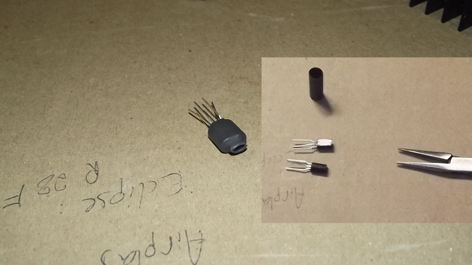
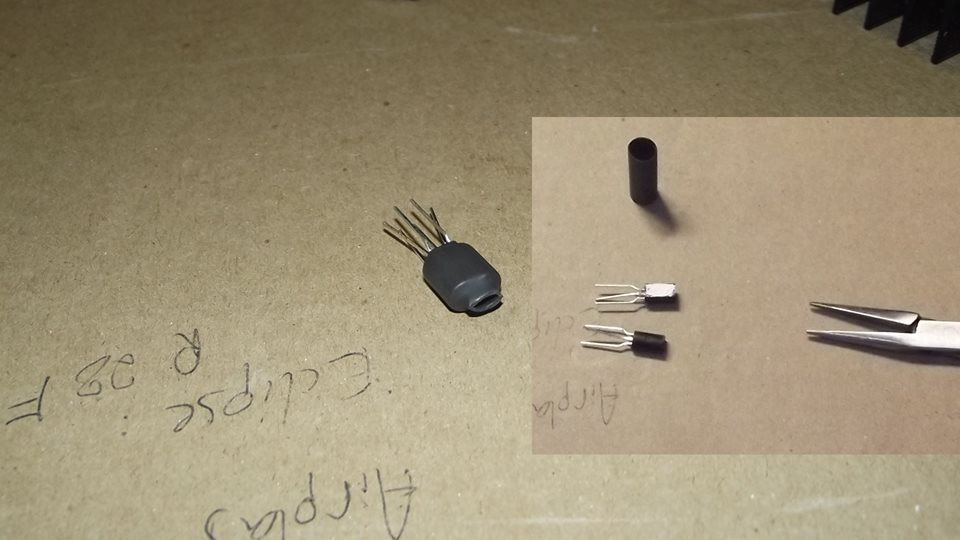
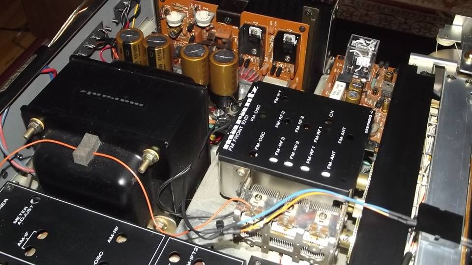
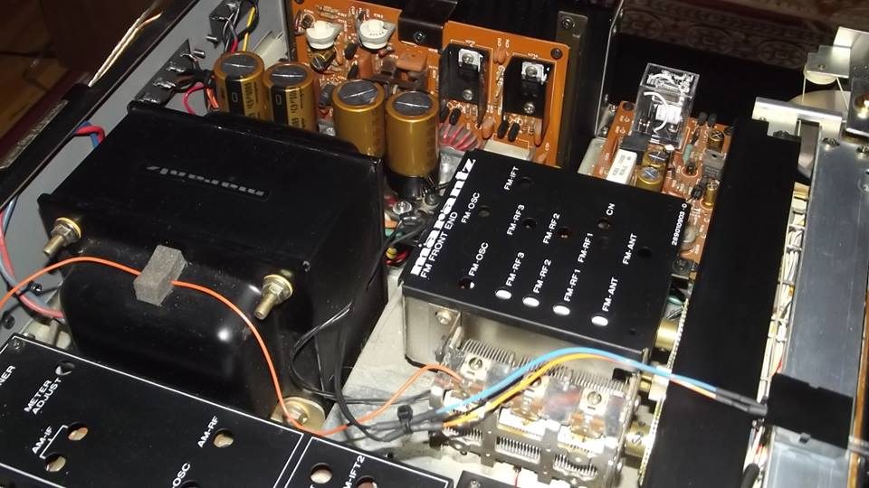

This is a restoration of a Marantz 2275, where all of the electrolytic capacitors were changed, the transistors (preamp and amplifier section), relays, some wires/terminals along with more technical service and proper integration of new parts


 


 

Please click here to return to the HOMEPAGE